1. Stay safe
This is a local wallet. Keys live in the phone’s Android Keystore. There is no account, no cloud backup, and no company that can reset your access.
- Write the recovery phrase on paper (or metal). Store it offline.
- Anyone with the phrase can spend the funds — even without this app.
- Deleting the app or using Wipe all local data erases keys from this phone. The ledger still holds the coins; only the phrase (or seed) can bring them back.
2. Install the app
screenshots/01-home-icon.png
Android launcher showing XRPL Mobile Wallet. Crop to the icon plus label if the rest of the home screen is busy.
3. First launch: set a PIN
The first time you open the app you must create a PIN. It unlocks the app on this phone. It is not your recovery phrase.
- On Set PIN, type a PIN of at least 6 digits.
- Type it again under Confirm PIN.
- Tap the button to save. You will land on the unlock screen (or straight into the app).
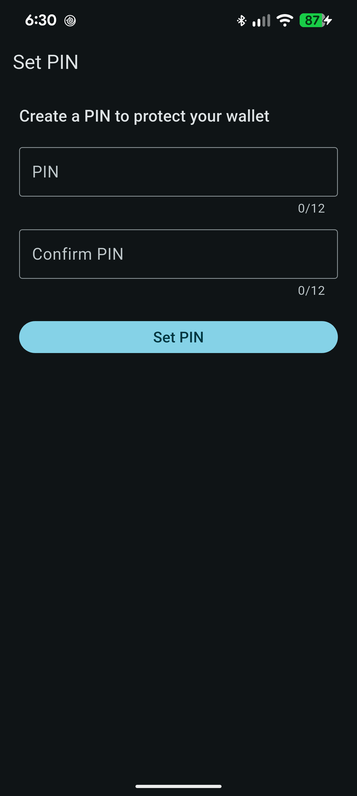
screenshots/02-set-pin.png
First launch. App bar “Set PIN”. Empty PIN + Confirm PIN fields. Do not include a real PIN in the photo.
FLAG_SECURE4. Unlock
Every time you return after the app has been in the background for a while (about 90 seconds), you will see the unlock screen.
- Type your wallet PIN and continue — that opens the wallets.
- If you turned on fingerprint / face unlock in Settings, the phone may prompt you automatically.
- If you set a Game PIN (optional), that PIN opens a game called Zerpland instead of the wallet. The wallet stays locked.
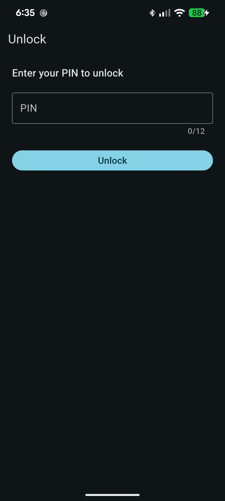
screenshots/03-unlock.png
PIN field empty. If a fingerprint button is visible, include it. No digits on screen.
FLAG_SECURE5. Find your way around
After unlock you get three tabs at the bottom of the screen:
| Tab | What it is for |
|---|---|
| Wallets | Your accounts, balances, and the portfolio total. |
| Activity | Recent payments and other ledger events. |
| Settings | Create / import, network, security, backup, coffee mug. |
The top-right connection chip (for example Mainnet · OK) shows whether the app can reach the XRP Ledger. Tap it for RPC (balances / send) and Watcher (live alerts) details, or to reconnect.
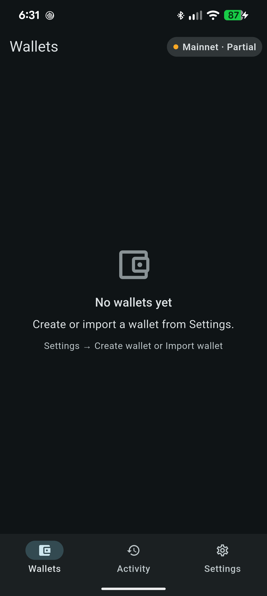
screenshots/04-tabs-empty.png
Wallets tab selected. Empty state “No wallets yet”. Show the three bottom tabs and the connection chip in the app bar.
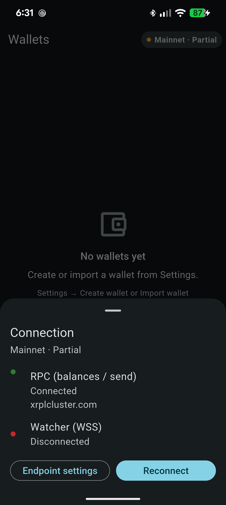
screenshots/05-connection-sheet.png
Tap the status chip in the app bar. Capture the bottom sheet with RPC and Watcher rows (host names only).
6. Create a new wallet
Use this if you do not already have a recovery phrase. The app builds a new 24-word phrase. You help mix in extra randomness with dice swipes and a personal word; the phone’s secure random generator is always included, so a weak word does not make a weak wallet.
- Label — a nickname such as “Main”. This is not secret.
- Entropy ritual — dice — swipe on the pad until the meter is full, as if rolling dice.
- Entropy ritual — word — type a personal word (optional extra mix-in), then continue.
- Recovery phrase — 24 words. Write them down offline, in order. Screenshots are blocked on this step.
- Check the box that you wrote the phrase down.
- Confirm backup — a short quiz so the phrase is really on paper.
- Tap Create wallet. The phrase is stored in the Keystore; you should not need to see it again unless you export it from your paper backup.

screenshots/06-create-label.png
Settings → Create wallet. Label field, network line, button “Continue to entropy ritual”.

screenshots/07-create-dice.png
Dice pad with the meter partly filled. Title “Entropy ritual”.
FLAG_SECURE
screenshots/08-create-phrase.png
24-word grid. For the published guide, blur or replace words with “word01 … word24” — never ship a live phrase.
FLAG_SECURE · redact words7. Import an existing wallet
Use this if you already have a secret from this app, another XRPL wallet, or a paper backup. Pick one of the three segments at the top:
| Tab | What you paste |
|---|---|
| Mnemonic | 12 or 24 recovery words. |
| Seed | A classic family seed starting with s. |
| Watch | A public address starting with r. No secret. You can see balances and receive, but you cannot send until you add keys or a Ledger. |
- Give it a Label (for example “Savings”).
- Paste the phrase, seed, or address. On Watch, you can tap Scan address QR.
- Check the network line (Mainnet vs Testnet) matches where the funds actually are.
- Import. The secret (if any) is stored in the Keystore, not in the visible address book.

screenshots/09-import.png
Three segments visible. Watch tab is friendliest for a public screenshot (address only). Empty secret field.
FLAG_SECURE on mnemonic/seed8. Your wallet list
The Wallets tab lists every account. Pull down to refresh balances.
- The card at the top is your portfolio total (all wallets, in XRP). Tap it to switch the total between XRP and USD.
- USD is an approximate rate from an on-ledger oracle — not a trading quote.
- Each row shows the label, a color dot, and the XRP balance. Tap a row to open it.
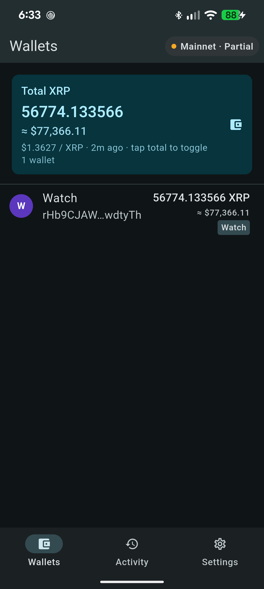
screenshots/10-wallet-list.png
At least one signing wallet. Portfolio summary on top. Connection chip visible. Prefer testnet or small amounts.
9. Open a wallet
The detail screen is the hub for one account.
- A chip says Signing (keys on the phone), Watch-only, or Ledger.
- The classic address (starts with r) is selectable — long-press / select to copy.
- Display name and Color are cosmetic.
- Balances list native XRP and any issued currencies (IOUs) you hold.
- Buttons: Send (if this wallet can sign) and Receive.
- The ⋮ menu can delete the wallet from this phone (the phrase on paper is still the real backup).
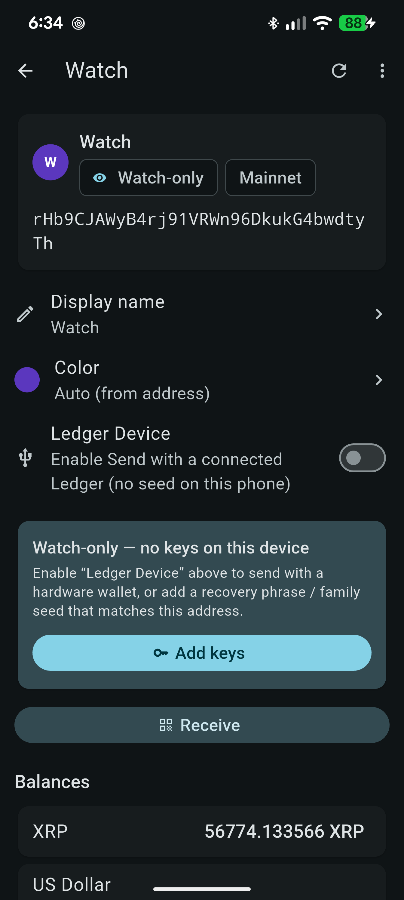
screenshots/11-wallet-detail.png
Signing wallet. Show address, chips, balances, Send + Receive. Crop if the list is long; keep the action buttons.
10. Receive XRP or tokens
- Open the wallet → tap Receive.
- Someone scans the QR code, or you tap Copy address and send them the r… address.
- They send XRP (or an issued currency you already trust) to that address on the same network (Mainnet vs Testnet).
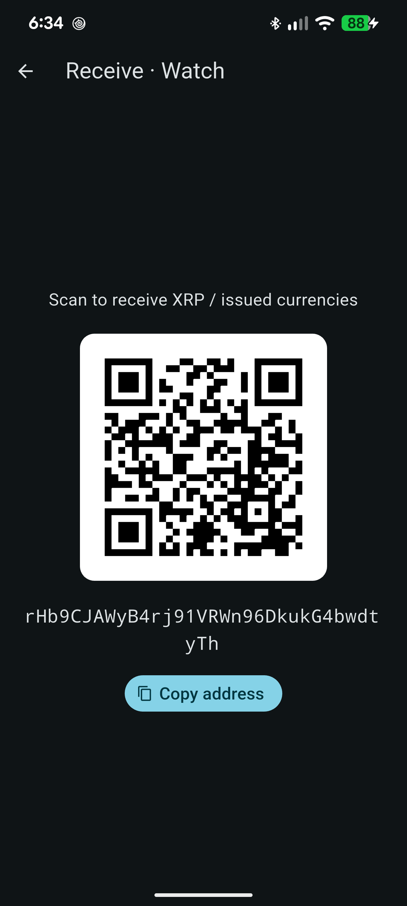
screenshots/12-receive.png
App bar “Receive · {label}”. QR, full classic address, Copy address button. A testnet address is fine.
11. Send
Send is a short wizard. You can go Back at any step before you confirm.
- Select asset — XRP or an issued currency you hold.
- Destination — paste a classic address. Destination tag is optional (some exchanges require it).
- Amount — check the “Available” line so you do not overspend. Keep a little XRP in the account; the ledger needs a reserve.
- Review — read destination, asset, and amount. Then Confirm & send.
- The result screen shows success or failure and a transaction hash you can copy.

screenshots/13-send-destination.png
Destination field with a sample r-address (testnet). Optional destination tag empty. Network line visible.

screenshots/14-send-review.png
Review rows: To, amount, network. Button “Confirm & send”. Use a tiny testnet amount.
12. Watch-only wallets and adding keys
A watch-only wallet is just an address. Useful for tracking a vault or an address whose keys live on a Ledger or another device.
To turn it into a signing wallet on this phone (the address must stay the same):
Choose how you will enter the secret:
- Paste recovery phrase — 12 or 24 words as one phrase.
- Enter phrase (grid) — 24 numbered boxes with word suggestions.
- Family seed — classic seed starting with s.
If the secret does not produce exactly this address, the app refuses and does not save anything. That protects you from attaching the wrong keys.
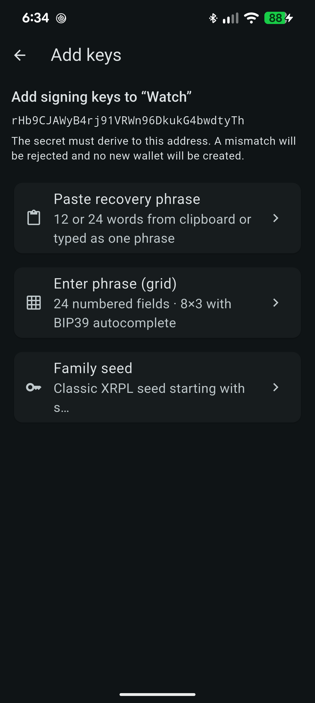
screenshots/15-add-keys.png
Watch-only wallet → Add keys. Three options visible. Address shown; no secrets.
13. USB Ledger
You can send from a watch-only (or any) address using a USB Ledger, without storing the seed on the phone.
- Unlock the Ledger and open the XRP app on the device first.
- On wallet detail, turn on Ledger Device.
- Set Ledger account index so the path m/44'/144'/index'/0/0 matches this address.
- Plug in USB. The first time, Android will ask you to allow the device — tap Allow.
- Tap Send (Ledger) and approve the payment on the Ledger buttons.
If the Ledger derives a different address, the app stops and tells you. Fix the index or uncheck Ledger Device.
14. Activity
The Activity tab is a feed of validated ledger events for your addresses. Pull down to refresh. If you have several wallets, chips at the top filter the list.
Tap a row for the hash, type, amount, and counterparties. You can copy the hash from the detail screen.
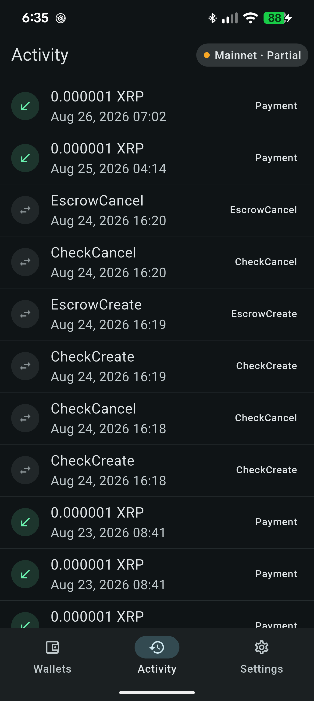
screenshots/16-activity.png
Activity tab with a few rows (testnet is fine). Filter chips if more than one wallet.
15. Settings
Open the Settings tab. Scroll; the page is a list of sections.
Network
Choose Mainnet (real XRP) or Testnet (practice money). Built-in public servers are listed with checkboxes — keep at least one. You can add a private HTTPS JSON-RPC node and a WSS node (must be https:// and wss://, not plain http/ws).
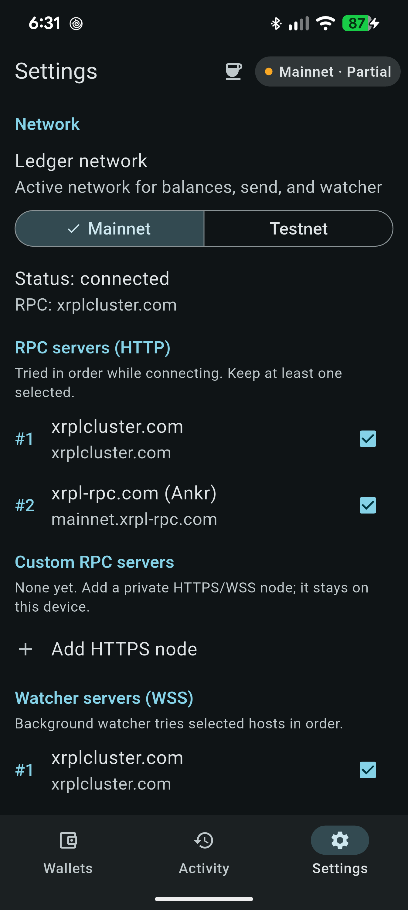
screenshots/17-settings-network.png
Mainnet selected. Built-in RPC and WSS checkboxes. “Add HTTPS node” / “Add WSS node” visible.
Watcher
Background watcher is an Android notification service that watches public addresses only. It never holds keys. Leave it on if you want a ping when a wallet receives a payment. On some phones, also disable battery optimization for this app so the watcher is not killed after you swipe the app away.
Wallets (from Settings)
Create wallet and Import wallet live here — not on the Wallets tab. That is easy to miss the first time.
Export list / Import list
These back up names and addresses only (password-encrypted JSON). They do not contain seeds. Import list adds missing addresses as watch-only. To move signing keys, you still need the recovery phrase or family seed.
Security
- Change PIN — requires the current PIN.
- Game PIN — optional second PIN that opens Zerpland instead of the wallet.
- Unlock with biometrics — fingerprint / face after a PIN exists.
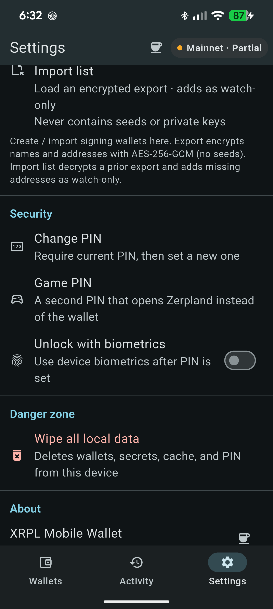
screenshots/18-settings-security.png
Scroll Settings to Change PIN, Game PIN, biometrics. No PIN digits on screen.
Danger zone
Wipe all local data deletes wallets, secrets, cache, and the PIN from this device. You will set up a new PIN afterward. Only do this if you have the recovery phrases.
16. Buy the developer a coffee
On the Settings tab, tap the small coffee mug in the app bar (or the mug on the About row). That opens Send, already aimed at the developer’s XRP address, on the amount step.
- If you have more than one signing wallet, pick which one to send from.
- Enter an XRP amount.
- Review and confirm, same as any other payment.
You need a signing (or Ledger) wallet. This is optional and on-ledger — not a website checkout.
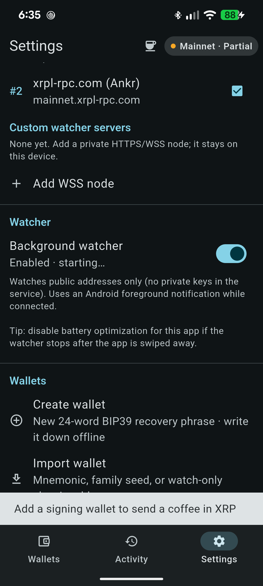
screenshots/19-coffee.png
Settings app bar mug visible, or the “Buy a coffee” send screen with destination locked and amount empty.
17. Move to a new phone
- On the old phone, confirm you still have each recovery phrase (or family seed) on paper.
- Optional: Settings → Export list so you do not retype labels and watch-only addresses. Pick a password you will remember.
- Install XRPL Mobile Wallet on the new phone and set a PIN.
- Settings → Import list (watch-only names/addresses), then Import wallet or Add keys for each signing account using the paper backup.
- Check balances, then wipe or uninstall the old phone if you are done with it.
18. If something goes wrong
| What you see | What to try |
|---|---|
| Balances stuck on “—” | Tap the connection chip → Reconnect. Pull down on Wallets to refresh. Check Mainnet vs Testnet. |
| Watcher stops after you swipe the app away | Settings → leave Background watcher on. In Android settings, disable battery optimization for this app. |
| Imported phrase makes a different address than desktop | This app uses BIP44 m/44'/144'/0'/0/0 with secp256k1 (same as xrpl.js Wallet.fromMnemonic). A family seed is a different path — use the Seed tab for s… secrets. |
| Ledger address mismatch | Open the XRP app on the device, then set the account index so the path matches the r-address on screen. |
| Forgot wallet PIN | The PIN cannot be recovered. If you have the recovery phrase, you can wipe the app and import again. If you do not have the phrase, the funds on this device stay locked. |
| Forgot Game PIN | The wallet PIN still unlocks the real app. You can clear the Game PIN in Settings (wallet PIN required). |
Screenshot list
Place PNG files in docs/user-guide/screenshots/ using these names. The cards above fill in automatically. Prefer portrait, dark theme, no notification shade. Redact any live secret.
| File | Screen | Notes |
|---|---|---|
| 01-home-icon.png | Launcher | App icon + name |
| 02-set-pin.png | Set PIN | FLAG_SECURE · no digits |
| 03-unlock.png | Unlock | FLAG_SECURE · no digits |
| 04-tabs-empty.png | Wallets empty | Show bottom tabs + chip |
| 05-connection-sheet.png | Connection sheet | Host names only |
| 06-create-label.png | Create · label | |
| 07-create-dice.png | Create · dice | FLAG_SECURE |
| 08-create-phrase.png | Create · phrase | FLAG_SECURE · redact words |
| 09-import.png | Import | Watch tab safest |
| 10-wallet-list.png | Wallet list | |
| 11-wallet-detail.png | Wallet detail | Send + Receive |
| 12-receive.png | Receive QR | |
| 13-send-destination.png | Send · destination | Testnet OK |
| 14-send-review.png | Send · review | Tiny amount |
| 15-add-keys.png | Add keys chooser | No secrets |
| 16-activity.png | Activity | |
| 17-settings-network.png | Settings · Network | |
| 18-settings-security.png | Settings · Security | |
| 19-coffee.png | Coffee mug / send | Mug in app bar or amount step |